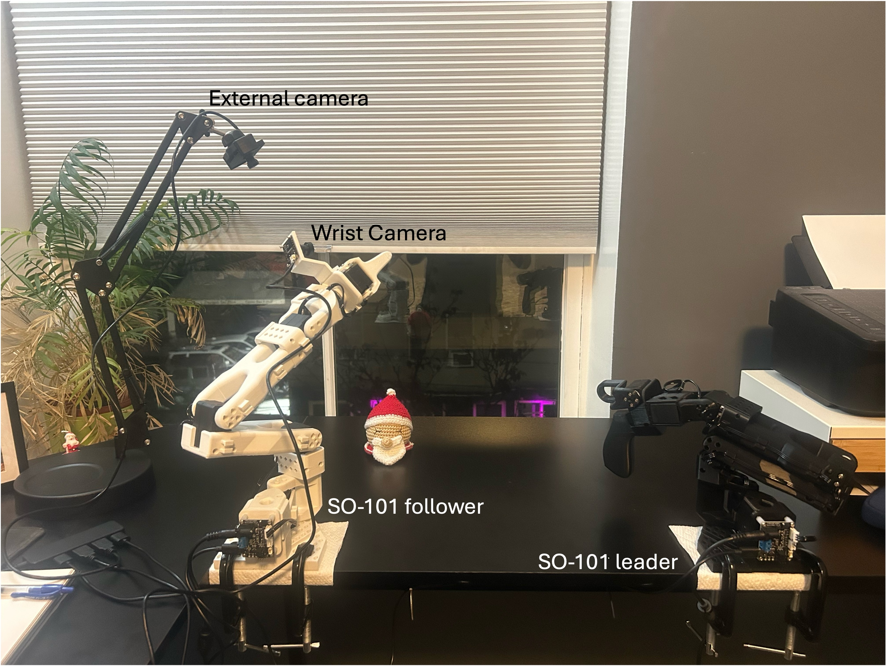
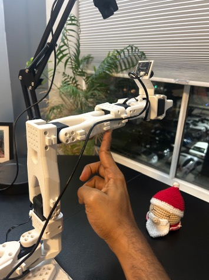

My first steps with real robot hardware—and the calibration mistakes that taught me how the setup works.
I have been working on learning and optimal control in simulation, and I wanted to start getting hands-on experience with a physical robot. I chose the SO-101 and LeRobot as my starting point.
My hardware arrived preassembled. That meant I could skip the mechanical assembly, but there was still plenty to learn: identifying the USB ports, calibrating the arms, getting teleoperation working, and setting up cameras.
This post follows that process on my MacBook Air, including the failures. By the end, I had both arms calibrated, two camera streams running during teleoperation, and a successfully completed test recording.

1. My setup
The leader is the arm I move by hand. LeRobot reads its joint positions and sends corresponding commands to the follower, which performs the task.
| Component | My setup |
|---|---|
| Computer | MacBook Air running macOS |
| Python environment | Miniforge/Conda environment named lerobot |
| Python version | 3.12 |
| Robot | Preassembled SO-101 leader and follower |
| Cameras | USB wrist camera and fixed external camera |
| Software | LeRobot, installed from a local repository checkout |
For reproducibility, record the software version from the LeRobot repository:
python --version
git rev-parse HEADInstalling LeRobot
I used a Conda environment and an editable installation of the LeRobot repository. I initially tried creating an environment with Python 3.10.18 and FFmpeg 7.1.1, then restarted with Python 3.12. The commands below reflect the environment I ultimately used.
The main steps in my final setup were the following. Run the Git commands from the directory where you want to keep the repository:
git clone https://github.com/huggingface/lerobot.git
conda create -y -n lerobot python=3.12
conda activate lerobot
conda install ffmpeg -c conda-forge
cd lerobot
pip install -e ".[feetech]"I also tried several optional dependency groups during installation:
pip install -e ".[core_scripts]"
pip install -e ".[training]"
pip install -e ".[all]"These were exploratory installation attempts; you do not need to run all three. Available extras depend on the LeRobot version; use the installation guide and the repository’s pyproject.toml for your checkout. The Feetech extra supplies the motor-interface dependencies for this setup.
One small mistake in my terminal history was typing coda remove instead of conda remove, which returned exit code 127. That was a command-name typo, not a LeRobot error. Removing the environment was part of my restart; it is not a routine setup step to repeat.
2. Find the port for each arm
With one arm connected over USB, I ran:
lerobot-find-portThe command listed many devices and asked me to disconnect the USB cable. After I unplugged the arm and pressed Enter, it identified the port that disappeared.
My leader was:
/dev/tty.usbmodem5CE51157301I repeated the process for the follower:
/dev/tty.usbmodem5CE51189631These are my machine’s device paths; replace them with yours. If both arms are connected during detection, unplug only the arm you are trying to identify.
One distinction initially confused me: finding a USB port does not establish that the motors are configured correctly. It identifies the controller’s serial connection. It does not check the individual motor IDs or communication settings.
Preassembled also does not necessarily mean preconfigured. If the supplier has not configured the motors, follow the official motor-setup procedure. Do not run lerobot-setup-motors as a quick diagnostic on an assembled chain: its procedure requires isolating motors individually.
In my case, the calibration command connected successfully and read the joints, so I could proceed without repeating motor setup.
3. Calibrate the leader
With the arm securely mounted and connected to its appropriate power supply, I ran:
lerobot-calibrate \
--teleop.type=so101_leader \
--teleop.port=/dev/tty.usbmodem5CE51157301 \
--teleop.id=alan_leaderThe ID identifies the saved calibration. I reused alan_leader in later commands.
Calibration had two stages:
- Put the joints near the middle of their motion ranges and press Enter.
- Move the listed joints through their full mechanically allowed ranges, then press Enter to finish.
The live table shows each joint’s current position and the minimum and maximum observed so far. Those numbers are encoder values, not degrees.
First check: record the complete motion ranges
My first table included:
NAME | MIN | POS | MAX
elbow_flex | 2047 | 2047 | 2047The identical minimum and maximum meant I had not moved that joint during range recording. Simply reaching the calibration screen was not enough—I needed to move every listed joint gently through its range.
Second mistake: an elbow minimum below zero
After moving the joints, I obtained:
elbow_flex | -138 | 1998 | 2056When I finished, calibration failed with:
ValueError: -138 does not fit register 'min_position_limit'LeRobot was trying to save a negative minimum into a motor register that could not accept it.
The starting pose was the first thing I corrected. The elbow’s initial value had been near the upper end of its recorded travel, suggesting that I had not centered it well before the first Enter.
I reran calibration, positioned the elbow more carefully around the middle of its mechanical range, and repeated the sweep. This time:
NAME | MIN | POS | MAX
shoulder_pan | 738 | 2018 | 3308
shoulder_lift | 853 | 1295 | 3230
elbow_flex | 874 | 2896 | 3065
wrist_flex | 834 | 2673 | 3159
gripper | 1462 | 2389 | 3231Calibration saved successfully:
Calibration saved to .../teleoperators/so_leader/alan_leader.jsonRe-centering resolved this error in my setup. It is not a universal diagnosis for every negative reading; firmware and feedback-mode settings can also matter. I would not fix this by clipping a negative limit to zero, since that hides the discrepancy.

Why was wrist roll missing from the table?
The calibration routine treats wrist_roll as a full-turn joint. It skips the manual endpoint sweep for that joint and assigns its full encoder range. Its reference orientation still depends on the initial homing step.
That distinction became important when I started teleoperation.
4. Calibrate the follower
I used the same process for the follower:
lerobot-calibrate \
--robot.type=so101_follower \
--robot.port=/dev/tty.usbmodem5CE51189631 \
--robot.id=alan_followerI centered the joints, matched the wrist/gripper reference orientation to the leader’s starting pose, and recorded the motion ranges.
The leader does not need to remain connected during follower calibration. Once a calibration command finishes and returns to the terminal, the calibration is saved. Before disconnecting power, place the arm in a supported resting position.
5. First teleoperation—and a 90-degree surprise
With both arms connected, I started teleoperation:
lerobot-teleoperate \
--robot.type=so101_follower \
--robot.port=/dev/tty.usbmodem5CE51189631 \
--robot.id=alan_follower \
--teleop.type=so101_leader \
--teleop.port=/dev/tty.usbmodem5CE51157301 \
--teleop.id=alan_leaderBefore starting, I placed the arms in roughly matching poses and cleared the follower’s workspace. The follower can move as soon as it receives the leader’s position commands.
Teleoperation worked, but the follower’s gripper had an approximately 90-degree wrist-roll offset relative to the leader.
The calibration reference was the first thing to revisit. Rotating the wrist during the endpoint-recording stage does not redefine its initial reference. The relevant check is whether both grippers had matching orientations relative to their forearms at the initial centering step.
Recalibrating fixed the 90-degree wrist-roll offset. After recalibration, the follower’s gripper orientation matched the leader’s.
Timing warnings at 60 Hz
The default target in my run was 60 Hz: about 16.7 ms per update. I saw repeated warnings such as:
Control loop is running slower (38.9 Hz) than the target FPS (60 Hz).
Robot control might be unstable.Many updates were near 60 Hz, while others took around 25 ms, with occasional longer delays.
This warning says that the loop is missing its timing target. It does not, on its own, prove a calibration fault or identify the source of the delay. The warning mentioned cameras and policy inference, but neither was enabled in this initial test.
A lower control-loop target is one troubleshooting step to try:
--fps=30A 30 Hz target allows about 33.3 ms per update. That gives more timing margin, although it does not cure occasional stalls caused by USB communication or system scheduling.
I have not yet confirmed whether switching to 30 Hz reduced the warnings; I will revisit that check later.
6. Set up the wrist camera
I started with the wrist camera, mounted on the follower and aimed toward the grasping area. The cable needs enough slack for joint movement without catching on the arm.
To find cameras:
lerobot-find-cameras opencvThe discovery command saved sample images under outputs/captured_images. On my Mac, I opened that folder with:
open outputs/captured_imagesInitially, I saw images from the wrist camera and the MacBook’s built-in camera. The wrist image was opencv_0.png, identifying it as camera index 0 in that configuration.
Adjust focus using a live preview
A still image was not convenient for adjusting focus, so I used a camera-only OpenCV preview:
python - <<'PY'
import cv2
cap = cv2.VideoCapture(0)
try:
if not cap.isOpened():
raise RuntimeError("Could not open camera 0.")
cap.set(cv2.CAP_PROP_FRAME_WIDTH, 640)
cap.set(cv2.CAP_PROP_FRAME_HEIGHT, 480)
cap.set(cv2.CAP_PROP_FPS, 30)
print("Click the preview and press Q or Escape to quit.")
while True:
ok, frame = cap.read()
if not ok:
raise RuntimeError("Could not read a camera frame.")
cv2.imshow("Wrist camera focus preview", frame)
key = cv2.waitKey(1) & 0xFF
if key in (ord("q"), 27):
break
except KeyboardInterrupt:
pass
finally:
cap.release()
cv2.destroyAllWindows()
PYI adjusted focus with an object at approximately the expected grasping distance. The useful question was whether the object near the fingertips was sharp, not whether the distant background looked sharp.
Close the preview before starting another program that needs the same camera.
A practical observation: handedness and camera clearance
With my current mounting arrangement, I feel that the leader–follower setup is more comfortable for a left-handed operator. My wrist camera is mounted on the left side of the follower’s gripper. When I operate the leader with my right hand and roll my wrist, the corresponding follower motion can swing the camera underneath the gripper, where it hits the table.
This is an observation about my particular camera placement and the wrist orientations I use, rather than a claim that the SO-101 is inherently designed for left-handed users. It also makes camera clearance part of the usable workspace: the gripper itself can clear the table while the camera does not.
Before collecting demonstrations, I need to account for the camera housing and cable throughout the intended wrist motion. Possible changes include repositioning the mount or using wrist poses that keep it above the table; I have not yet established which adjustment works best for me.
7. Add the external camera
The external camera provides the wider view: where the object is, where it should go, and how the arm moves between them.
I connected it, reran camera discovery, and identified it as index 1. My camera mapping was:
| View | Camera index |
|---|---|
| Wrist | 0 |
| External | 1 |
Camera indices can change when devices are reconnected. Check the saved images rather than assuming these numbers apply on another machine.
I positioned the external camera to include the complete task area and reduce occlusion by the arm. The same preview script works for checking its focus and framing; change VideoCapture(0) to VideoCapture(1).
8. View both streams during teleoperation
The two-camera command uses the same robot ports and calibration IDs:
lerobot-teleoperate \
--robot.type=so101_follower \
--robot.port=/dev/tty.usbmodem5CE51189631 \
--robot.id=alan_follower \
--robot.cameras='{
"external": {"type": "opencv", "index_or_path": 1, "width": 640, "height": 480, "fps": 30},
"wrist": {"type": "opencv", "index_or_path": 0, "width": 640, "height": 480, "fps": 30}
}' \
--teleop.type=so101_leader \
--teleop.port=/dev/tty.usbmodem5CE51157301 \
--teleop.id=alan_leader \
--fps=30 \
--display_data=trueThis command requests 640 × 480 at 30 FPS from each camera and sets the control-loop target to 30 Hz. Use a profile supported by your cameras. I have not yet evaluated whether the lower control-loop target resolves the earlier timing warnings.
Rerun is the visualization viewer in this workflow. It lets me inspect the streams and robot data while operating the arm. Displaying those streams with this command does not create a LeRobot training dataset.
9. Record a small test dataset
The test recording completed successfully. This was the final setup milestone before moving on to collecting a training dataset.
For a small pipeline check, the example command below requests three demonstrations of a simple task: picking up a block and placing it in a bowl.
Stop teleoperation before launching the recorder:
lerobot-record \
--robot.type=so101_follower \
--robot.port=/dev/tty.usbmodem5CE51189631 \
--robot.id=alan_follower \
--robot.cameras='{
"external": {"type": "opencv", "index_or_path": 1, "width": 640, "height": 480, "fps": 30},
"wrist": {"type": "opencv", "index_or_path": 0, "width": 640, "height": 480, "fps": 30}
}' \
--teleop.type=so101_leader \
--teleop.port=/dev/tty.usbmodem5CE51157301 \
--teleop.id=alan_leader \
--dataset.repo_id=local/so101_first_test \
--dataset.single_task="Pick up the block and place it in the bowl" \
--dataset.num_episodes=3 \
--dataset.episode_time_s=30 \
--dataset.reset_time_s=20 \
--dataset.fps=30 \
--dataset.push_to_hub=false \
--display_data=trueThis requests three episodes, with up to 30 seconds per demonstration and 20 seconds between episodes for resetting the scene. The task description should match what is actually demonstrated.
The recorder saves camera observations, robot states, actions, and episode metadata. Uploading is disabled in this example. With the default cache settings, the dataset location is:
~/.cache/huggingface/lerobot/local/so101_first_testThe documented recording controls are:
| Key | Action |
|---|---|
| Right arrow | End the current episode or reset period early |
| Left arrow | Re-record the current episode |
| Escape | End the session and finalize recording |
Keep the terminal focused and follow its prompts. Keyboard behavior can depend on the installed version and macOS permissions. Allow saving and video encoding to finish before closing the process. For another fresh test, use a new dataset name rather than overwriting the first attempt.
Before scaling up, I will inspect both videos, confirm successful task completion, and check the recorded states/actions and timing. Three episodes are a pipeline check, not evidence that there is enough data to train a reliable policy.
What I learned
The most useful lessons came from the steps that did not work immediately:
- Finding a serial port and communicating with the motors are separate checks.
- The initial calibration pose matters, especially when a joint’s recorded limits cross zero.
- Wrist roll uses a different calibration path from the joints in the range table.
- A fixed gripper-orientation mismatch and a timing warning are different problems.
- Camera focus should be checked at the distance where the robot will actually interact with objects.
- Live visualization and dataset recording are separate stages.
With teleoperation, both cameras, and a successful test recording in place, I now have a working setup for collecting demonstrations. Getting an arm to follow my movements—and understanding why it sometimes did not—has already made the hardware feel much less opaque.
Next: demonstrations and ACT training
My next step is to collect demonstrations through teleoperation and use them to train an Action Chunking Transformer (ACT) for imitation learning. I want to move from controlling the follower myself to having a learned policy perform the demonstrated task.
I will start with a clearly defined task, review the recordings, and build a consistent demonstration dataset before training and evaluating the policy. Dataset collection, ACT training, and evaluation will be the focus of the next post.